Global Digital Design at Wunderman Thompson
Company
Wunderman Thompson
Industry
Global Advertising • Digital Agency
Role
Graphic Designer
Responsibilities
Digital Design • Editorial Layout • Brand Application • Multilingual Design
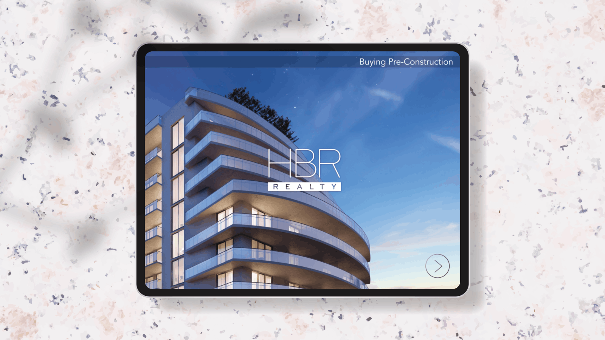
Overview
Joining Wunderman Thompson marked my first experience working in an international agency environment, collaborating with teams based in Miami while bringing a European design perspective. This role pushed me beyond my comfort zone — both culturally and creatively — and allowed me to grow as a more adaptable and open-minded designer. Working across global brands, I developed a strong ability to navigate and apply established brand systems while still delivering engaging and visually refined designs. The diversity of projects, clients, and perspectives enriched my approach to design, strengthening both my attention to detail and my creative thinking.
My Role
Key contributions from my experience working across international teams, global brands, and multilingual design challenges.
01.
Designing Within Global Brand Systems
Worked across a range of international clients, including Adobe and SONY, creating digital assets aligned with established brand guidelines. Ensured consistency and quality while adapting designs to different formats and platforms.
02.
Multilingual Editorial Design
Designed and refined brochure layouts for Royal Caribbean across multiple languages. Maintained visual consistency while carefully adapting typography, spacing, and layout to accommodate varying text lengths and linguistic nuances.
03.
Digital Experience & Visual Trends
Created engaging digital applications using Adobe tools, applying a strong awareness of design trends and visual culture. Ensured each output felt modern, relevant, and aligned with brand expectations across diverse audiences and markets.
04.
Cross-functional Collaboration
Collaborated closely with international teams, including developers, marketers, and designers, to deliver cohesive solutions. Ensured all design work aligned with brand strategy, user experience principles, and technical requirements across projects.
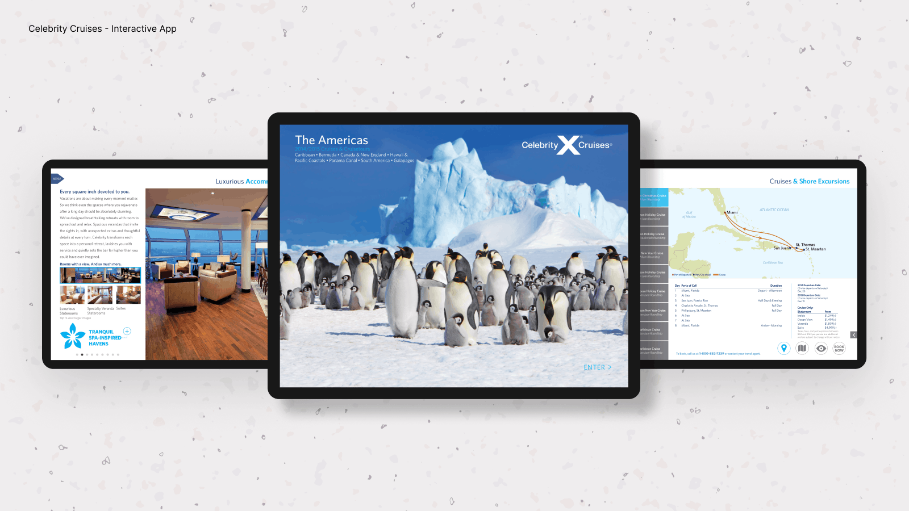
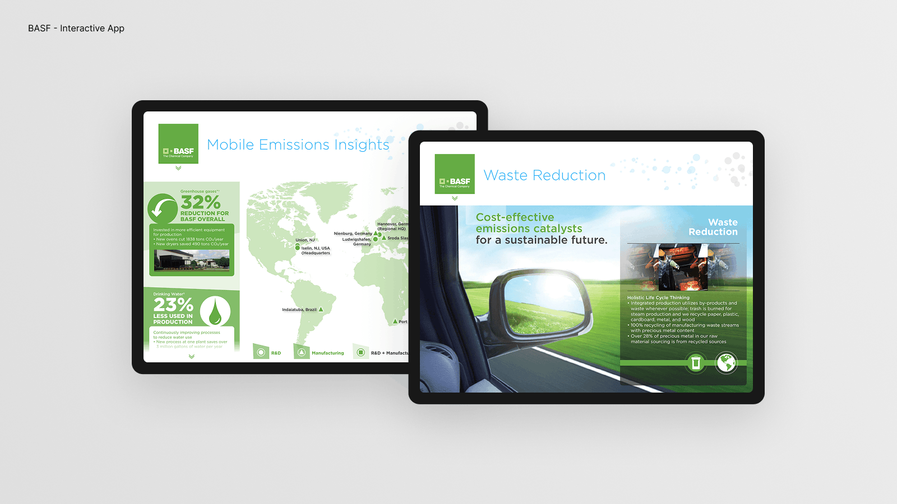
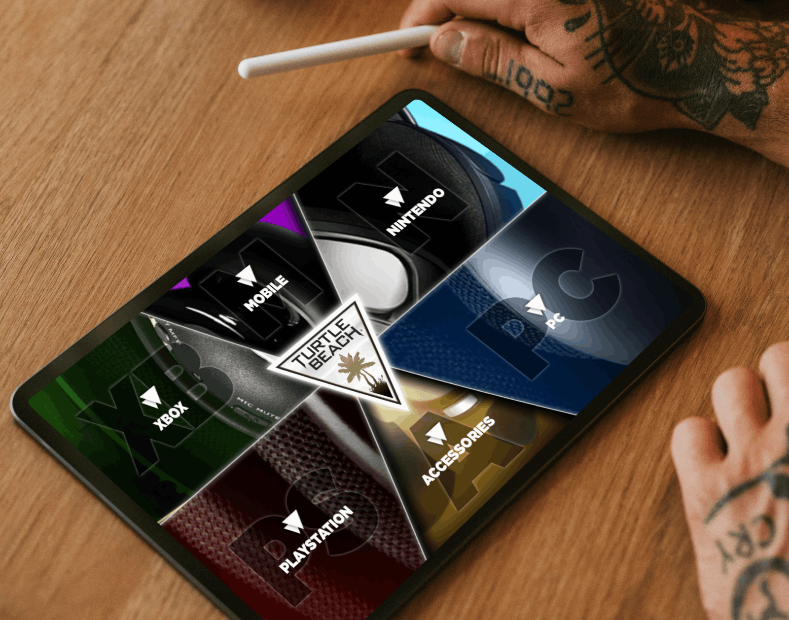
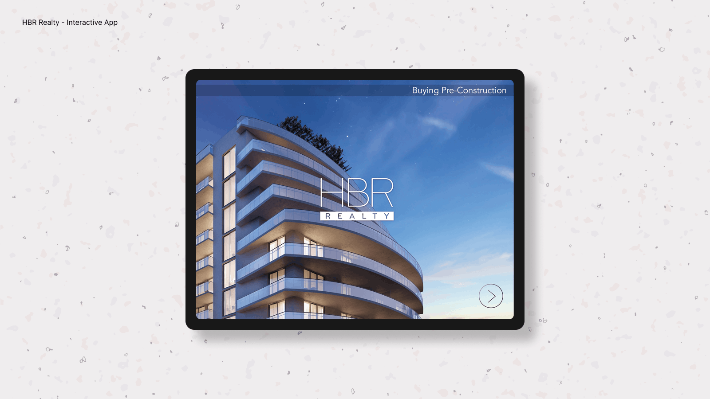
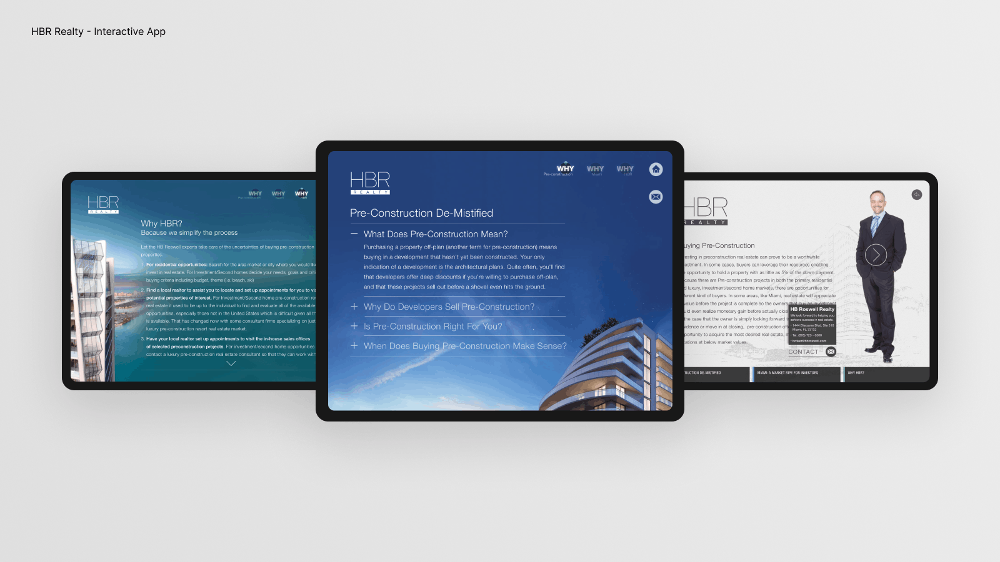
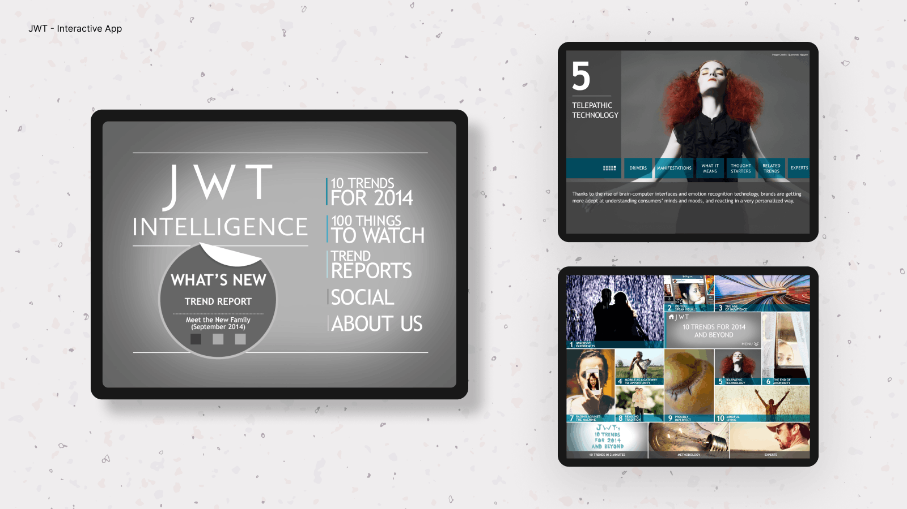
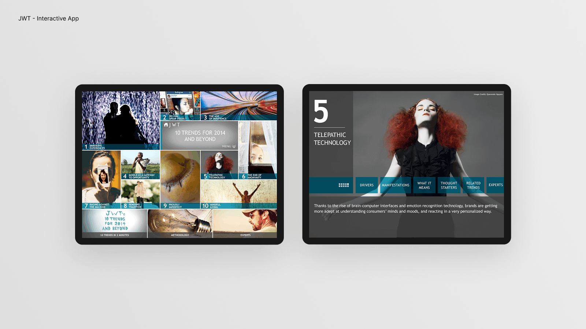
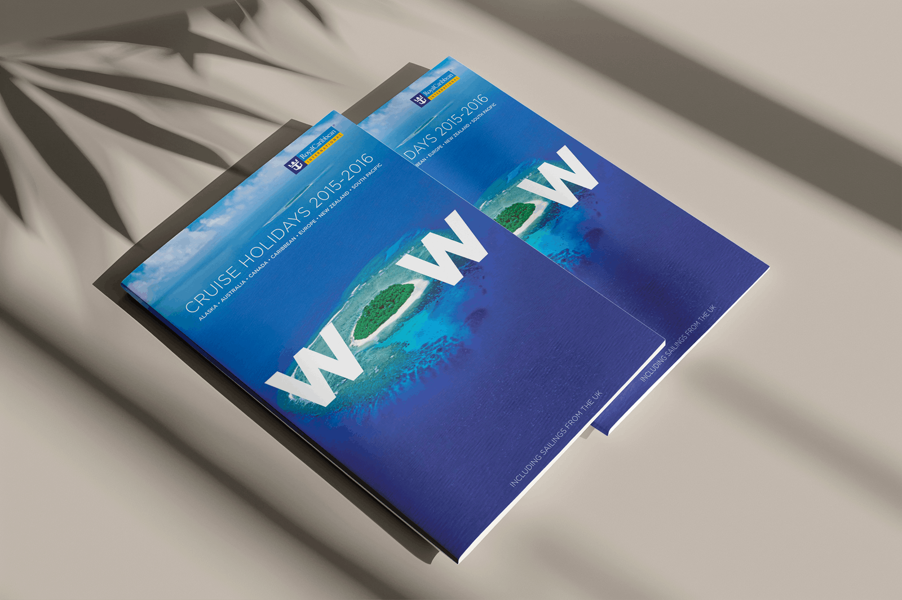
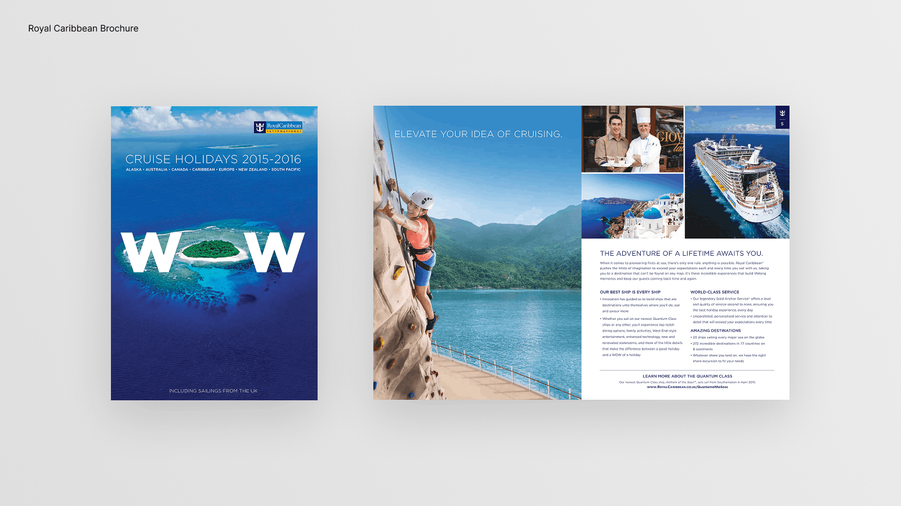
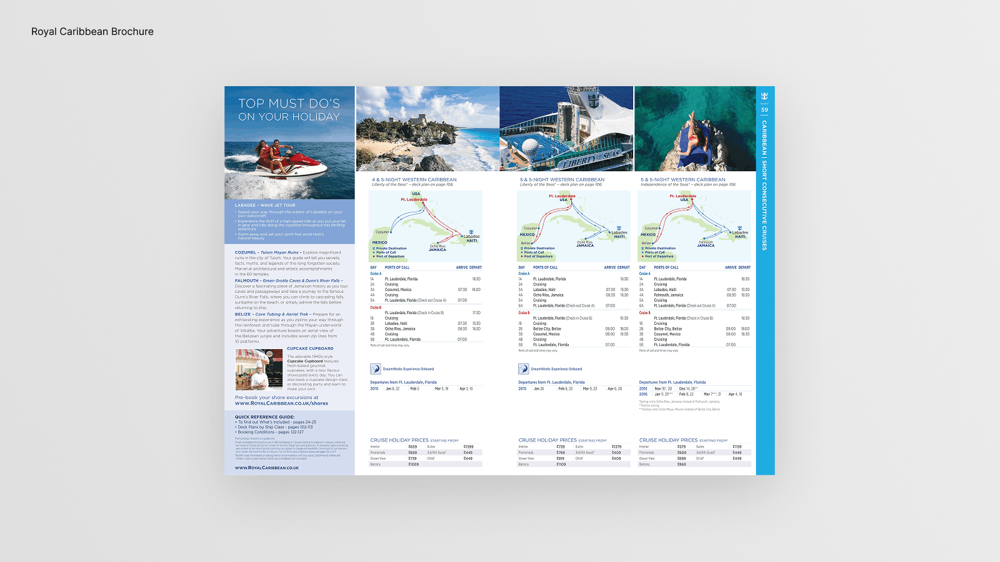